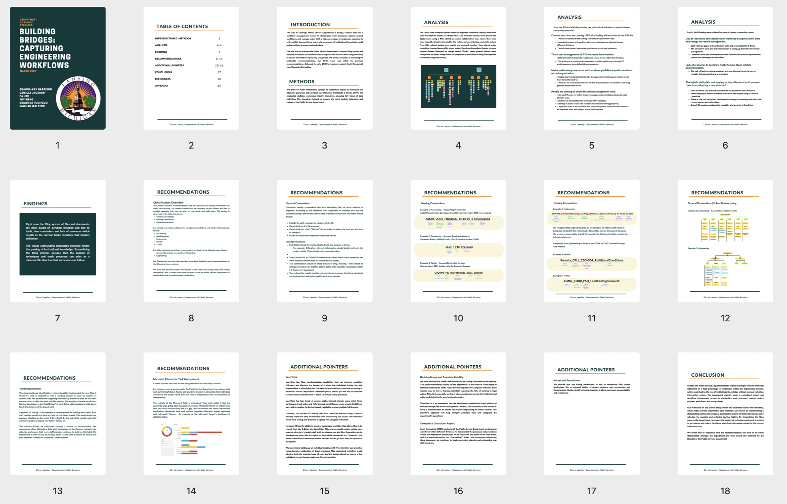
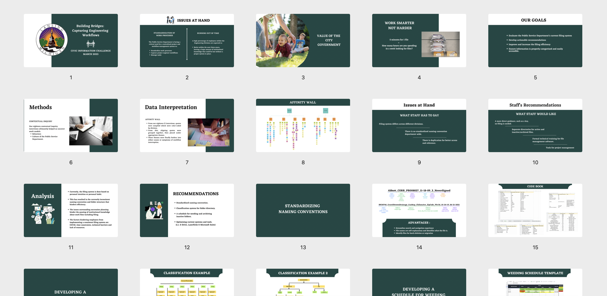

Context
City of Lansing has been experiencing a somehow unorganized information management adversity, leading to penitential loss of institutional knowledge, work inefficiency and record management hardship. This is why we came in. We spent a whole week working in person with our client, focusing on the issue of information management to locate the causes of the issue and provide feasible recommendations.
Process
Collect Data
To smoothly launch contextual inquiry right after we arrive, we met weeks ahead to research the institution of our client and brainstormed together to come up with interview protocols for 4 different departments.
To thoroughly understand how such a complex institution works, each pair of us conducted no less than 6 contextual inquiries (19 in total), where we ask interviewees to reproduce their work instead of telling their work to us, so that we could observe the real work process.
Analyze Data
To keep everyone on the same page, we conducted interpretation session after each 3 interviews. When interviewer reporting, the rest of the team took notes in turn, making sure the key findings were recorded and phrased as a complete sentence for following analysis.
To analyze the extensive amount of qualitative data we gained from 19 interviews, we utilized affinity wall (K-J Method), clustering related findings together and organized them hierarchically from bottom to top.

4 key issues and 3 main causes were defined through organizing the diagram.
Then, we paired again to make good use of hybrid background of librarian, UX designer and developer to figure out practical solutions targeting each cause of issue.
Report
We co-authored a consulting report and made a presentation for the client, detailing the issues and potential solutions.

Presentation
We formally reported our findings and recommendations to our client. I was primarily responsible for explaining how to employ taxonomy principles to better organize and utilize exsited files in simple words, such as only using one classification system at each level of hierarchy.
